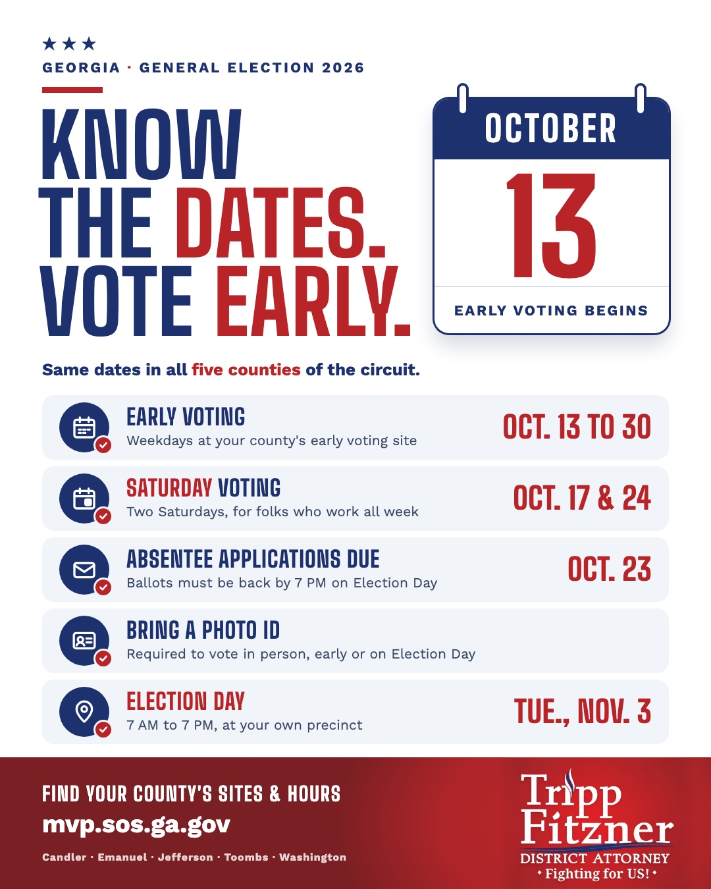

Tripp Fitzner
District Attorney · Middle Judicial Circuit of Georgia
Home
About Tripp
The Record
The Circuit
Victim Services
Files & Policies
Contact
Early voting dates
October 13, 2026

← All posts